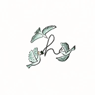

APTITUDE CHECK
正解を当てる試験ではありません。あなたが現場で、どう考え、どう動く人なのかを知り、面接でじっくりお話しするためのものです。
面接のご連絡と、お答えを読むときの手がかりにします。
訪問は車で回ります。
どちらも大事な考え方です。あなたがふだん近いほうに、丸を寄せてください。
訪問の現場で実際に起こりうる場面です。それぞれ「いちばん良い」と「いちばん避けたい」を1つずつ選んでください。
この1年ほどのお仕事で（前の職場を含みます）、次のようなことはありましたか。
うまくまとめる必要はありません。ふだん考えていることを、そのまま書いてください。面接では、ここに書いたことから伺います。
利用者さんとチームを守るために、全員が守っている約束です。すべてに同意いただける方だけ、送ることができます。
直したいところは「直す」から戻れます。
適性検査のお答えを受け付けました。じっくり考えてくださって、ありがとうございます。内容を拝見し、あらためてご連絡いたします。
ご不明な点はお電話で（平日 9:00〜18:00）